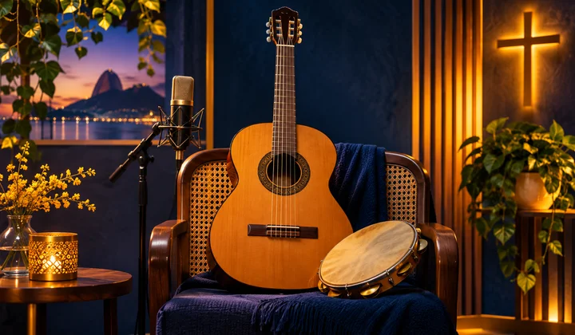
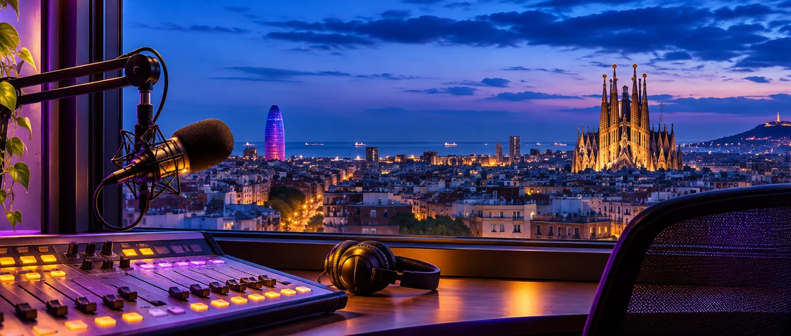
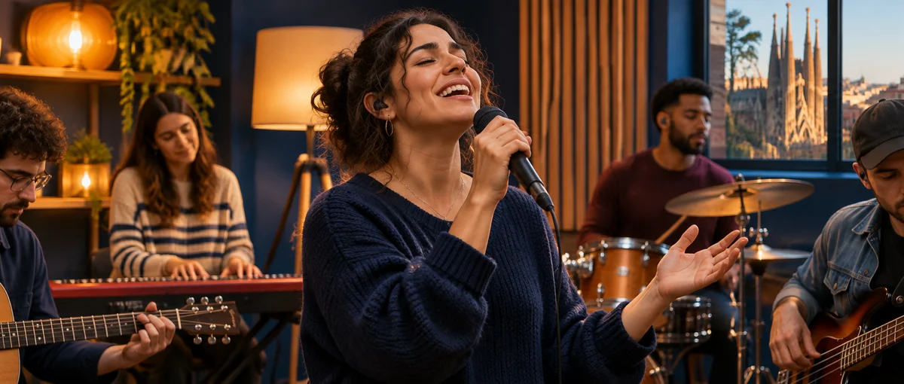
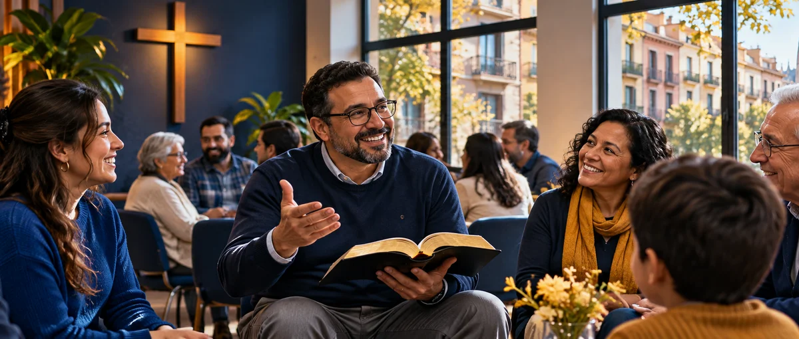

En Manantial FM la música nos une. Descubre diferentes sonidos y expresiones de fe, desde los clásicos del góspel hasta los ritmos más actuales. Esta selección es orientativa y no representa un horario fijo: nuestra programación está en renovación.
🎤 Urbano y contemporáneo
Hip hop cristiano · Rap gospel · Trap cristiano · Reguetón cristiano · Pop cristiano · Rock cristiano · Electrónica cristiana
Jazz · Blues · Soul · R&B · Funk · Góspel tradicional · Country gospel
🇧🇷 Brasil y ritmos del mundo

Gospel Brasil · Bossa nova gospel · Samba gospel · Reggae cristiano · Música latina cristiana · Flamenco · Música andina
Los estilos pueden variar según la emisión. Próximamente anunciaremos la nueva programación.
📅 Próximamente: programación de noche

Estamos preparando estos espacios para su emisión diaria. Horarios previstos (hora de Barcelona), pendientes de activación y confirmación.
🕗 20:00 — Leyendas del Gospel 🕘 21:00 — Mujeres de la Biblia 🕙 22:00 — Hombres de la Biblia 🎙️ La Otra Mejilla — todos los martes, próximamente (hora por confirmar)
Próximamente. Estos horarios todavía no están en emisión y pueden ajustarse.
❤️ Nuestra misión: que nadie pierda la esperanza
Detrás de cada persona que atraviesa una situación difícil hay una historia, un nombre y una vida que merece respeto. Nadie debería sentirse invisible, olvidado o solo.
En Manantial FM creemos que la fe también se expresa con gestos sencillos: una mano tendida, una conversación que reconforta, un plato de comida o una prenda de abrigo. Nuestro deseo es acompañar especialmente a las personas sin hogar y a quienes más lo necesitan, sin juzgar y con el corazón abierto.
Queremos unir fuerzas con personas y entidades solidarias para conseguir alimentos y ropa, facilitar servicios de peluquería y buscar lugares donde las personas puedan ducharse y recuperar bienestar y dignidad. Son objetivos que iremos desarrollando según los recursos y colaboradores disponibles; no son servicios garantizados actualmente.
No disponemos de refugio ni ofrecemos alojamiento. Pero sí queremos ofrecer algo que puede ser el comienzo de un cambio: cercanía, escucha y esperanza.
Desde Barcelona para las naciones. Manantial FM: un mensaje positivo y tu radio amiga.
La Palabra que inspira nuestra misión
«Porque tuve hambre, y me disteis de comer»
Mateo 25:35 · RVR1960
«Hijitos míos, no amemos de palabra ni de lengua, sino de hecho y en verdad»
1 Juan 3:18 · RVR1960
«Así que, según tengamos oportunidad, hagamos bien a todos»
Gálatas 6:10 · RVR1960
CAMPAÑA DESTACADA · RECOGIDA SOLIDARIA DE ALIMENTOS
🥫 Campaña solidaria: Un alimento, una esperanza
❤️ Un kilo de comida, un kilo de amor
Recogemos alimentos donados para entregarlos a personas y familias en riesgo de exclusión social, especialmente quienes viven situaciones de vulnerabilidad o carecen de hogar.
Hay personas en riesgo de exclusión social para quienes llenar la despensa es un desafío diario. Un pequeño gesto puede convertirse en una gran ayuda.
Queremos reunir alimentos no perecederos para apoyar a personas y familias en situación de vulnerabilidad: arroz, pasta, legumbres, conservas, aceite y leche de larga duración, siempre en envases cerrados, dentro de su fecha de consumo y en buen estado.
❤️ ¿Quieres donar alimentos? Puedes entregárnoslos en el punto de recogida que anunciaremos o consultarnos para que nuestro equipo valore recogerlos directamente, según la zona y la disponibilidad. Nosotros organizaremos su entrega posterior a personas y familias que los necesiten. ¿Quieres ayudar también como voluntario? Escríbenos para coordinar una entrega o sumarte como voluntario. También buscamos comercios y entidades que quieran participar.
Importante: Punto de entrega: calle Navas de Tolosa, 292, bajos, Barcelona. Cómo llegar: metro L1, parada Navas. Horario de recepción de alimentos:sábados de 19:00 a 21:00 y domingos de 12:00 a 16:00. También puedes consultarnos para que recojamos los alimentos, según la zona y nuestra disponibilidad.
La recogida recibe alimentos no perecederos. El cartel también presenta una forma de colaborar con 1 €.
🎤 Talento Cristiano de Cataluña

Un espacio de Manantial FM para descubrir y apoyar a cantantes cristianos evangélicos, solistas, grupos, compositores independientes y ministerios de alabanza de toda Cataluña.
Primera fase: Barcelona y su área metropolitana, de Sant Boi a Montgat. Después: artistas de Girona, Tarragona, Lleida y el resto de Cataluña.
📣 Convocatoria abierta: si eres artista cristiano o conoces a alguien que quiera dar a conocer su música, envíanos su nombre artístico, municipio, estilo musical, enlaces a canciones y redes sociales, y un contacto profesional autorizado.
Las fichas se incorporarán tras confirmar los datos y contar con el permiso del artista. La difusión o emisión de canciones requerirá las autorizaciones correspondientes.
Estamos preparando las primeras fichas verificadas. No publicamos datos personales privados sin autorización.
⛪ Iglesias y comunidades cristianas de Barcelona

Directorio informativo de iglesias y comunidades cristianas de Barcelona y su área metropolitana. Los datos proceden de páginas públicas de las entidades y directorios; pueden cambiar. Confirma horarios y ubicación antes de desplazarte.
⛪ Iglesia Sendero de Jesús
🌐 Iglesia online — comunidad cristiana con actividad por internet, de momento sin sede física de atención al público.
Iniciativas de comunicación vinculadas al proyecto: Manantial FM (radio online) y BCN Gospel Channel (televisión online). Se muestran como medios de comunicación, no como iglesias.
Última revisión de fuentes: 8 de noviembre de 2026. La inclusión no implica aval de Manantial FM.
📢 Publicidad y pódcast
¿Tienes un negocio, iglesia, evento o proyecto que quieras dar a conocer? Consulta nuestros espacios publicitarios y opciones para pódcast. También ofrecemos una promoción de 20 segundos gratuitos; pregunta por las condiciones y disponibilidad.
Retrato de Charles y Patricia: pendiente de incorporar la fotografía original en blanco y negro.
Siete años llevando esperanza
Manantial FM nació en 2019, fruto de una historia de vida, transformación y fe. Sus fundadores, Charles Calabuig Machado y Patricia Ramos de Sousa, impulsaron este proyecto con el deseo de compartir un mensaje positivo y llevar esperanza a través de la radio.
Mucho antes de contraer matrimonio con Patricia, Charles vivió una etapa difícil de su vida. Las malas compañías lo llevaron a experimentar la dureza de vivir en la calle. Sin embargo, su historia dio un giro cuando tuvo un encuentro personal con el Señor. Aquella experiencia marcó el comienzo de una nueva etapa y sembró en su corazón el deseo de transmitir esperanza a otras personas.
Hoy, Manantial FM continúa compartiendo música, fe y mensajes positivos desde Barcelona para las naciones.
Esta historia es un primer relato que ampliaremos próximamente.